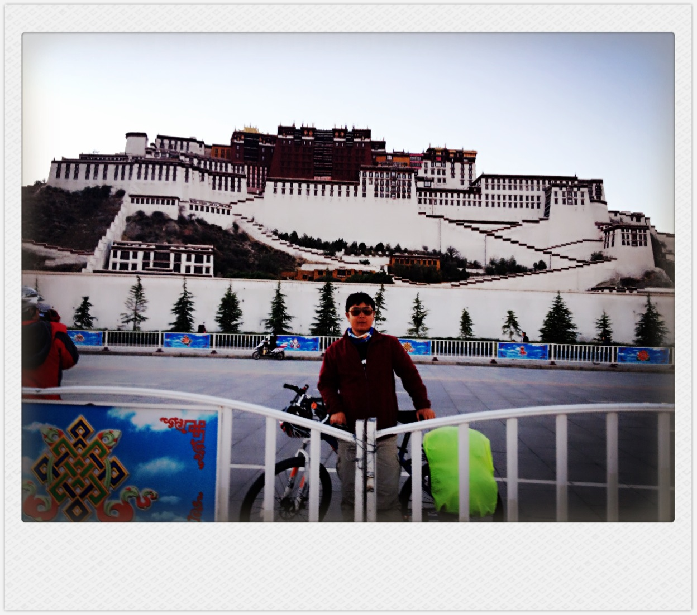

川藏骑行已经过去一个星期了， 期间不断有人希望我能写篇游记来记录整个骑行过程。
我想了下， 如果要写完整的记录， 内容非常多， 并非一时半会能写完的。 因此决定， 暂且写一篇骑行总结。
有一天， 我一定会把完整的骑记补上的！！！
PS， 在骑行过程中， 饺子用一款手机端的应用“面包旅行”简单地记录了这次骑行。
其中不乏有一些不错的图片， 喜欢的朋友可以打开一看。
地址： http://breadtrip.com/trips/2387616838/
如果是在电脑上的话， 直接点击上面的地址就可以浏览了。
如果想在手机上用“面包旅行”浏览的话， 就先安装下这个软件， 然后使用其中的“找朋友”功能搜索用户“鱼肉饺子”，
就可以找到我以及我的骑行足迹了。
---------------------------------- 分割线 ---------------------------------------
以下是总结内容，
1. 骑行总结之数字篇
- 本次旅行， 始于2013-05-18 早上5:40（保福寺桥机场大巴车站）， 结束于2013-06-15 早上8:20（北京西客站）， 总28天。
- 总骑行里程： 约为2280公里（码表中间出故障， 所以没能记录准确的里程）。
- 翻越4000米以上高山：13座（觉巴山3900多米近似算在内）。
- 翻越5000米以上高山：2座。
- 日行最长里程：195公里（就是冲向拉萨那天了，目标在即，人的潜力果然是无穷的）。
- 日行最短里程：46.52公里（穿过川藏边境到达温泉山庄泡温泉）。
- 最高时速：~60公里/小时（应该是在翻阅了最后一座山 —— 米拉山 后的放坡途中。 之所以敢将速度飙到60, 主要是考虑当时的路况较好较直。 滑下坡不只是享受，更多的是危险啊。。。）。
- 最低时速： 额， 这个嘛就， 呵呵， 应该是在爬陡坡中。 通常爬坡速度为5左右。
- 自行车故障： 全程无爆胎记录。 在下七十二拐时， 骑废了bb5碟刹的后刹， 在波密车行更新。
- 体重减轻：约6斤。
- 晒黑程度：额， 回到家大家还是有人能认出来 ……
2. 骑行总结之伤病篇
一路骑行， 期间遇到的伤病绝对令饺子印象深刻。
- 手掌、手腕： 在成都市区骑行过程中，不小心撞到了街道中的贴栏杆上。。。 当时反应及时， 直接来了个鲤鱼跳龙门，因此后果不是非常严重， 只是伤到了手掌和手腕。
- 膝盖： 在从雅安骑往新沟的后半程， 膝盖开始痛， 当天骑到最后一个坡时， 膝盖已经痛得厉害了， 以至于爬完最后一个坡后， 直接人车一起倒地， 过了许久才爬起来。 晚上已经痛到寸步难行了， 当时我就在反复地想怎么办怎么办。。。 But， 万幸中的万幸， 在我最痛苦的时候遇到了一行九人老年团的黄大爷。 黄大爷帮我擦了药。。。 第二天膝盖好了很多， 使得我可以继续上路！
- 屁股： 在骑到中间段的时候， 屁股开始痛， 并且慢慢的很多地方都被磨破了。 后来买了999皮炎平软膏， 擦了一段时间， 有些效果， 但没办法完全治好。
- 嘴唇： 同样备受折磨的还有我的嘴唇， 初期只是感觉嘴唇干， 比较难受。 但到了中后期， 上下嘴唇就完全烂掉了！ 无比痛苦啊。
- 双腿： 双腿的酸痛基本上是伴随着始终的。 有的时候白天骑的比较长了， 到了晚上时痛得连上厕所大号都成了问题。。。
- 双手： 因为整个川藏线都是连绵起伏的大山， 每次爬了几十公里的上坡到哑口后， 接着就必然是连续几十公里的下坡。 下坡就意味着要死死的捏着闸， 时间久了双手总会变得麻木， 以至于早晚刷牙时挤牙膏都成问题。 这个伤痛骑行结束后过了很长时间都还没有恢复。
3. 骑行总结之驴友篇
骑行一路， 遇到驴友无数， 其中不乏有很多奇人。
- 郭老板及画家： 在我心目中， 他们就是两大传奇， 详细情况上文已有记录， 这里就不再重复。
- 九人老年团： 他们一行平均年龄60+， 有男有女， 一起骑在路上相当的拉风~其中就包括给我治好膝盖伤的黄大爷。 另外， 老年团中还包括酷爱骑行的蔺大爷，他今年六十多岁， 近几年已经骑遍了中国很多的省市， 总骑行里程已经有八万多公里了！ 佩服啊。
- 老年二人组： 在爬高尔寺山的过程中， 遇到一男一女的老年骑行组合， 他们一位67岁， 另一位68岁！ 骑起来也像我们年轻人一样矫健，并时不时地给我们这些年轻人喊加油。
- 廖星： 微博帐号“蜗牛环骑中国”。 今年三四月份从广州辞去工作开始骑行， 一路骑过了广西， 云南等省， 在川藏的中间段与我们相遇。 他的计划是用一年半的时间环游中国！ 小伙人很好， 在路上， 曾多次帮我们订晚上休息的床位， 因此很感谢他， 并祝愿他顺利完成环游梦想。
- 刘大爷： 在爬川藏线上第一座海拔超过5000米的东达山时， 遇到了刘大爷。 刘大爷也是位骑行神人， 今年已61岁高龄， 但爬起坡来丝毫不输给我们年轻人， 甚至比我们要专业很多。 爬坡中大爷看我累得气喘吁吁的， 便在旁边告诉我应该如何正确地呼吸， 用力。。。休息时还拿出美味的牦牛肉干给我呢。
- 暮野舍友： 在拉萨的暮野外吕舍遇到了妹陀、浅笑、娇姑娘、双子猩四位姑娘， 我们可是同住一屋哦~她们是四个充满活力的九零后。 大家在一起生活了三四天， 期间留下了许多难忘的记忆， 一起泡吧， 一起吃饺子， 一起HIGH在羊湖。
- 睡在我上铺的大爷： 在返京的火车上， 遇到了睡在我上铺的大爷。 同样是个传奇人物， 他今年将近六十岁， 一人从辽宁骑到拉萨， 并且因身患糖尿病每天要注射胰岛素！ 额的娘啊， 这该是怎样的毅力能够支撑他走完如此艰辛的旅程啊。
4. 骑行总结之遗憾篇
一路骑来， 收获了无数的快乐、艰辛、美景。。。当然也会有些许的遗憾。
- 然乌： 05年买了国家地理杂志的西藏特刊， 在那一期中， 我见到了美轮美奂的然乌湖、来古冰川、 来古村。 但当我满怀期待的骑到那里的时候， 发现其实然乌没有那么美。 湖边的很多地方充斥着垃圾使得然湖失色很多， 另外， 很遗憾的是第二天早上起来的时候天空不作美——有些阴天， 使得我们没有看到美丽的然乌湖晨光。
- 男迦巴瓦： 第二次进藏， 第二次站在男迦巴瓦的面前， 但依然没有看到她的真面目。
- 搭车： 我们在理塘至巴塘段搭车了。 尽管当时我们有充分的理由来支撑我们搭车（打劫高发段， 容易被狗咬。。。）， 但我们因此没能细细感受当时沿途风景。 事后多少觉得有些遗憾， 因为那段路的风光很美。 另外， 我们在通麦至排龙段也搭车了。 当时是提前得知因连日暴雨加上大型工程的蹂躏使得本来就非常险的路况（通麦天险以及排龙天险应该是整个川藏线上最险的路了）变得更加恶心了。 Anyway, 事后其实多少有些不甘心， 有时会想， 就算再险也该亲自尝过！
- 无爆胎记录： 对于骑川藏线， 全程不爆胎。。。很多人认为这只能是一个传说， 但， 事实上我们和jianchen的确就没有爆。 呵呵， 说它是个遗憾， 一来， 我们之前每人准备的内胎统统没用上。 其次， 我们竟然都没有好好体验一把在途中扒带补胎换胎的瘾~
- 美景多多： 毫无疑问， 川藏线的美景数不胜数， 但因时间有限， 所以没办法在遇到美景时把她们欣赏个够。
5. 骑行总结之建议篇
这里的建议并非是提给那些未来会骑行川藏线的童鞋们的， 而是要提给致力于川藏线的建设人们。
- 沿途垃圾的处理： 一路上， 除了有无数美景外， 还有无数的垃圾。 队友们都曾多次感慨， 如果路上能少了这些垃圾， 川藏线将更加完美。 但大家又都很理解， 因为往往大家在路上的时候会有一些垃圾需要丢， 可方圆几千公里愣是没有一个垃圾桶。。。 对此， 郭老板曾提出一个不错的建议， 可以把川藏线上的里程碑改造成一个个的垃圾桶。 这个工程应该不算浩大吧。
- 杜绝孩子沿途要东西： 路上会经过很多错落， 遇到无数的小孩子。 不晓得从几何起， 路上遇到的几乎所有小孩子都会去向我们要东西， 甚至是明抢！ 其实我们中有很多人还是挺想寥表善心的， 但见到一幕幕的伸手要还有抢， 我们就只有厌恶了。 对此我想， 首先， 应该呼吁所有旅游经过川藏的游客不要随便给路边小孩东西； 其次， 可以号召各地的邮政部门设立捐赠中心。 这样， 游客可以把各种想送给当地小孩的东西都送到邮局， 然后邮局再集中的分发给当地的孩子。
6. 骑行总结之感恩篇
川藏骑行的路上充满了艰辛， 也遇到了很多困难，真诚感谢那些路上曾给予我帮助、鼓励、 加油、 赞赏的人！
- 首先感谢我的老板mshao， 以及lead们jzhao、szhou批我长假！
- 感谢我的队友： jianchen, 郭老板， 画家。 一路上有你们的陪伴， 多了许多快乐；
- 感谢成都直必达旅舍的老胡帮我调车；
- 感谢给我治膝盖的黄大爷；
- 感谢在骑往康定路上遇到的那个主动帮我加水的大叔；
- 感谢在下觉巴山时遇到的帮我调车的刘师傅；
- 感谢波密车友车行的夏夏帮我修好了后刹；
- 感谢在爬东达山时遇到的教我骑行技巧的刘大爷；
- 感谢所有在骑行路上给予我加油的骑友、 驴友、 游人；
- 感谢程老师、小吕、许莉、卢纯纯、董杰一路对我骑行的关注、鼓舞；
- 感谢所有通过网络发给我鼓舞、 赞誉的我的朋友们同学们： 刘京京、曲文、白云、李红、徐阳、杨博、青锐、海津、柳小飞、张文杰、杨丹、宋坤、 陈新依、马海燕、倪斌、王晓丽、可飞-小石、井口的青蛙；
- 感谢所有一路关注我并给予我鼓舞、 赞赏的同事们： moli, zdou, jzhao, qduanmu, xigao, cqi, yuping, zwang, tingting, yuwang, xiaonan, dxiao, yulwang, jingwang, zheliu, xchu, xjia, xuesong, libin.
注: 上述好友list中， 所有之前已知邮寄地址的，我在拉萨的最后一天为各位寄送了明信片， 请注意查收。 另外， 请那些之前未告诉过我邮递地址但希望获得明信片的好友及时联系我， 我会在北京为各位寄送明信片的（所有明信片都已经在拉萨盖好纪念戳）。
That's all.
鱼肉饺子
2013-06-22 凌晨
Comments
comments powered by Disqus